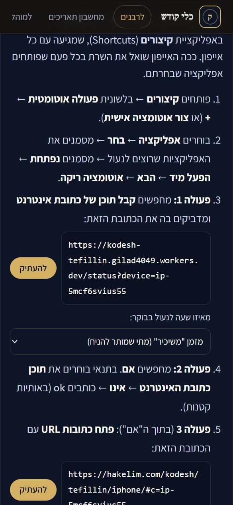

בוחרים אפליקציות (ווטסאפ, יוטיוב...), ועד שמצלמים עם תפילין הן פותחות את דף האישור במקום. בלי להוריד אפליקציה, בעברית ובחינם.
hakelim.com/kodesh/tefillin/iphone. הדף יוצר קוד אישי לטלפון, ומכין את הכתובות להעתקה.ok.
שמות הכפתורים לפי iOS בעברית, וייתכנו הבדלים קטנים בין גרסאות. הצילומים מהדף באתר ברוחב של טלפון. לא נעול את כל הטלפון – אפל מאפשרת לנעול רק אפליקציות שבוחרים.
נכנסים בלחיצה, במסך מלא, ורוב הכלים עובדים גם בלי אינטרנט.
לנעול את כל הטלפון, להופיע בתפריט השיתוף, להיות ווידג'ט, או לרוץ ברקע. בשביל אלה צריך אפליקציה שאפל אישרה – וזה כבר בתכנון של המיזם.
סורקים במצלמה של האייפון. בחינם, בלי הרשמה ובלי פרסומות.